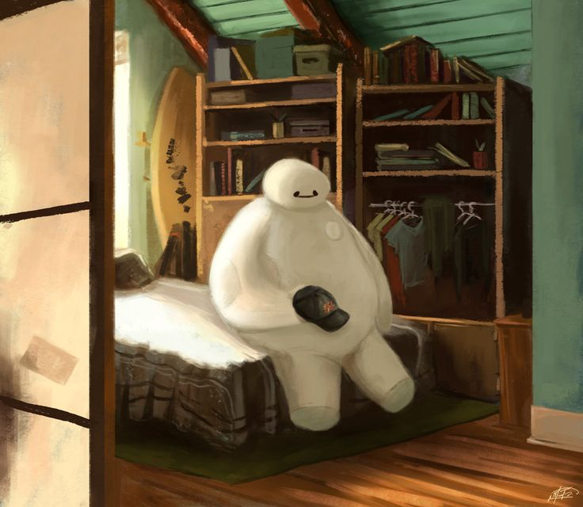

My Classes This Semester
- CMSC 121: Internet Technologies
- CMSC 125: Operating Systems
- CMSC 127: File Processing and Database System
My Favorite Movies
- Interstellar (IMDB)
- Director
- Christopher Nolan
- Writers
- Jonathan Nolan
- Christopher Nolan
- Stars
- Matthew McConaughey
- Anne Hathaway
- Jessica Chastain
- The Notebook (IMDB)
- Director
- Nick Cassavetes
- Writers
- Jeremy Leven
- Jan Sardi
- Nicholas Sparks
- Stars
- Gena Rowlands
- James Garner
- Rachel McAdams
- Captain America: The Winter Soldier (IMDB)
- Director
- Anthony Russo
- Joe Russo
- Writers
- Christopher Markus
- Stephen McFeely
- Joe Simon
- Stars
- Chris Evans
- Samuel L. Jackson
- Scarlett Johansson
My Moods
| Me when I'm happy | Me when I'm sad |
|---|---|
 |
 |
Fun Facts About My Seatmates
Norman Eulin: Hiking is one of his hobbies.
Elizah Sumbeling: She's interested in Biology.